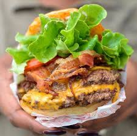

Deluxe Bunless Burger

This burger is proof you don't need a bun to enjoy life.
Without the bun to cramp your style, the possibilities are endless. Add avocado,
bacon, hot sauce, any kind of cheese, and wrap it in lettuce -- or don't!
If you're feeling spicy, add horseradish or Sriracha, even wasabi. The burger can take on whatever
personality you decide to give it: Mexican, Asian, or plain old American.
Ingredients
- Ground beef
- Tomatoes
- Lettuce
- Mushrooms
- Avocado
- Cheese, sliced or shredded
- Bacon
- Coconut oil
- Condiments
- Preferred seasonings
Steps
- Add salt, pepper, and your preferred seasonings (I like chili powder) to your ground beef.
- Make patties and cook them.
- Cook the bacon and sautee the mushrooms.
- Chop or slice additional vegetables.
- Add sauces or condiments.
- Assemble the burger and enjoy!